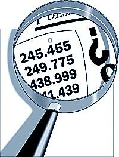

Quién soy?
- Marcos Vanetta
- Hacks/Hackers Buenos Aires
- Knight/Mozilla Fellow
- The Texas Tribune
- @malev
Qué es un dato?
- Información concreta sobre hechos, elementos, etc., que permite estudiarlos, analizarlos o conocerlos
- En informática, información que se suministra al ordenador y que este almacena de forma legible.
- Representación simbólica (numérica, alfabética, algorítmica, espacial, etc) de un atributo o variable cuantitativa o cualitativa.
- Un valor que se le añade a algo.
Para qué queremos datos?
Para contar una historia
Responder una pregunta
Explorarlos
Tipos de datos
- Cualitativos
- Cuantitativos
- Categóricos
- Discretos
- Continuos
Datos estructurados o desestructurados
Dónde encontramos los datos?

Portales/Catálogos de datos
- Gobiernos
- Universidades
- Institutos de investigación
- ONGs
- Privados (empresas)
- Organizaciones periodísticas
Cómo pueden venir los datos
- Planilla de cálculo (CSV, Excell, ODS)
- JSON, XML, HTML
- Una base de datos
- PDF, Word
- Quién sabe?
(╯°□°)╯︵ ┻━┻
Datos en portales
Identificar
- Contenido
- Fuente
- Formato del dataset
- Tipos de datos en el dataset
- Rango de datos
Datos en la WEB (scraping)
- https://www.kimonolabs.com
- http://www.diputados.gov.ar/diputados/listadip.html
Datos en la WEB (fusion tables)
- http://www.clarin.com/edicion-impresa/Cruce-importadores-Central_0_1218478144.html
Datos en PDFs
- Texto
- Tablas
- Datos en imágenes
Extraer text/entidades de un PDF
Extraer datos de una tabla en un PDf